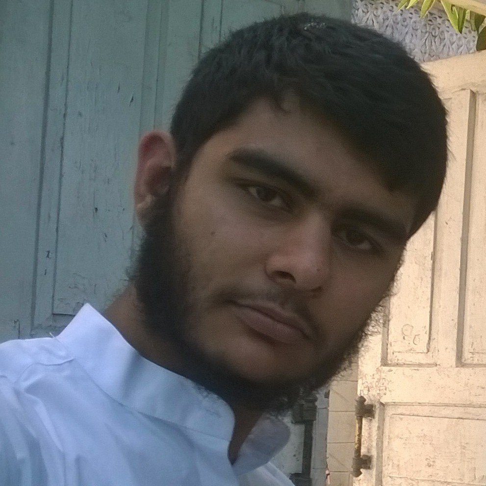

|
Muhammad Zeeshan Qazi Junior Undergraduate School of Computer Science and Engineering Shri Mata Vaishno Devi University Ramnagar District Udhampur J&K -182122
|
 |
I am Junior Undergraduate Student at School of Computer Science And Engineering, Shri Mata Vaishno Devi University,Katra, Jammu And Kashmir. As an Computer Science student my area of interest lies in the Automata Theory and Model Verification using Computer Simulation.
Presently, I am looking for work opportunities in the research environment in my area of interest
| High Sec. School | 2013-2015 | SP Smart High Sec. School |
| High School | 2002-2013 | JK Public High School |
| Social Media Intern | Forum For Fast Justice | Feb 2016-Mar 2016 |
Worked for Nyay Yatra 2016 organized by Forum for Fast Justice as social media promoter(intern). The objective of this Yatra is to create awareness among general mass regarding the functioning of Judiciary in India. Members of this Yatra traveled across India from 30th January 2016 - 4th March 2016.One team travelled from Kashmir to Kerela and other from Kutch to Kolkatta. This Yatra is first of its kind against the delays in Judiciary.
CertificateC language
Scratch
HTML5
C++
Python
Java
Haskel
NuSMV
UPPAAL
Model Checking